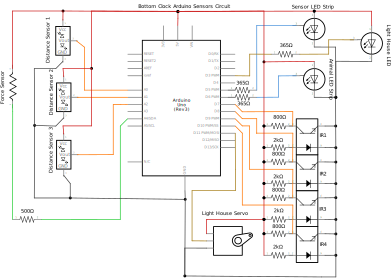
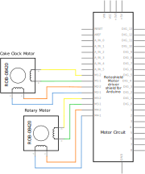

Electrical Subsystem
Our electrical subsystem serves to gather data from the environment and user, power the motors and LEDs to provide feedback, and signal between Arduinos to communicate between clock tiers.
{kind=link}
Here's a circuit diagram showing our very complicated sensor arrangement! Three distance sensors are connected to pins A0-A2; the LEDs are connected to PWM pins 5 and 6; and the reflectance sensors are connected to PWM pins 9-12.
{kind=link}
Here's a circuit diagram showing how our motors are connected to the motor shield. There are two sets of five slots for motors, and each stepper motor takes up all five of them.
We did a lot of WEIRD stuff with connectors. Sometimes we had to solder two wires together with a resistor and then add heat-shrink wrapping over them to make sure they didn't fall apart. Sometimes we had to crimp wires and stick them in connectors and then heat-shrink the connectors. It was a mess. In the end we mostly soldered our wires to protoboards to keep them from getting messy. Thank goodness for protoboards!
Electrical Components:
LEDS: We used addressable LEDs for the lights to indicate whether the IR distance sensor is triggered and to light up the images of the animals. This was because if each LED required a separate pin on the Arduino, we would not have enough pins. We decided against having something in hardware to encode the signals to each pin and instead used addressable LEDs which had that function built in.
MOTORS: We started out using DC motors with lower torque but switched to higher-torque stepper motors because of the friction and weight of the rotating pieces.
DISTANCE SENSORS: First, we wanted to encourage people to imitate the motion of a clock, so we wanted to tell if they were were moving around the clock. We used 3 IR distance sensors and recorded the order they were triggered to find out if people were actually ambulating around the clock.
REFLECTANCE SENSORS: When choosing sensors for the encoder, we basically just needed some that would work at really close range and could discriminate between something black and something white at a few millimeters. And we had a bunch just lying around in the stockroom, so we used those!
SURPRISE TRIGGER: We really wanted a physical interaction our users could carry out, so we decided on a pressure sensor. We decided to use velostat, an electrically conductive material whose resistance changes with pressure--ie, it changes when stepped on.
Two resistor breadboard Other electrical stuff too Wire organization strategy, explaining what gets crimped/connectors
Challenges:
One of our biggest challenges early on was trying to find enough pins for all the electrical components we wanted to use. We needed analogue pins for three distance sensors and four reflectance sensors (we had 6 total) and digital pins for 18 LEDs (we had 14 total)! Clearly we wouldn't be able to do it all on one Arduino--OR WOULD WE? We solved our problems neatly by using addressable LEDs, which only take one pin per string, and putting our reflectance sensors in digital pins after making sure their threshold read as HIGH when they saw something black. This meant we only needed 3 analogue pins and 6 digital pins, leaving us pins to spare!
We were also advised that if users were going to be spinning a stationary motor we would have problems with back EMF that might permanently damage the motor. So we added a flyback diode to prevent back EMF. Turns out it completely prevented our motor from working at all... so we just ditched it. The motor hasn't broken yet, so maybe it wasn't too important!